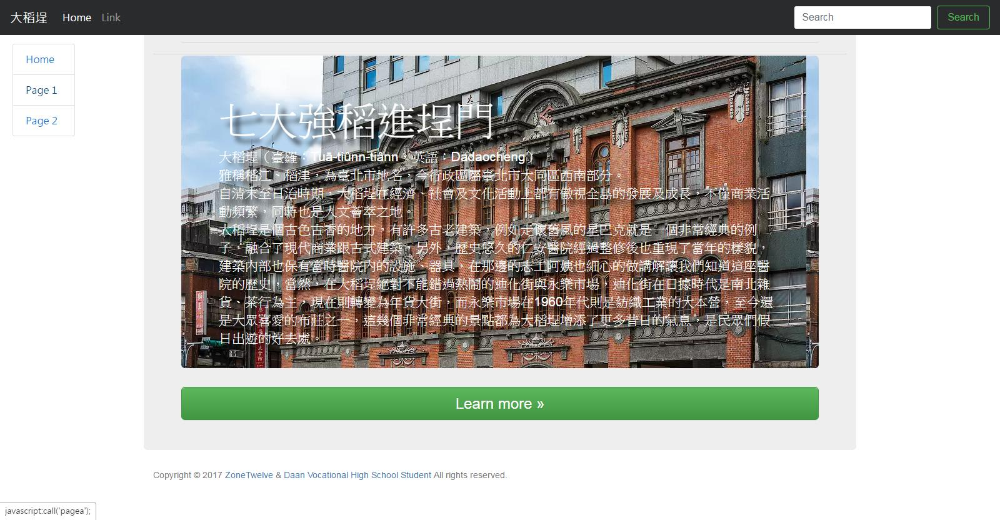
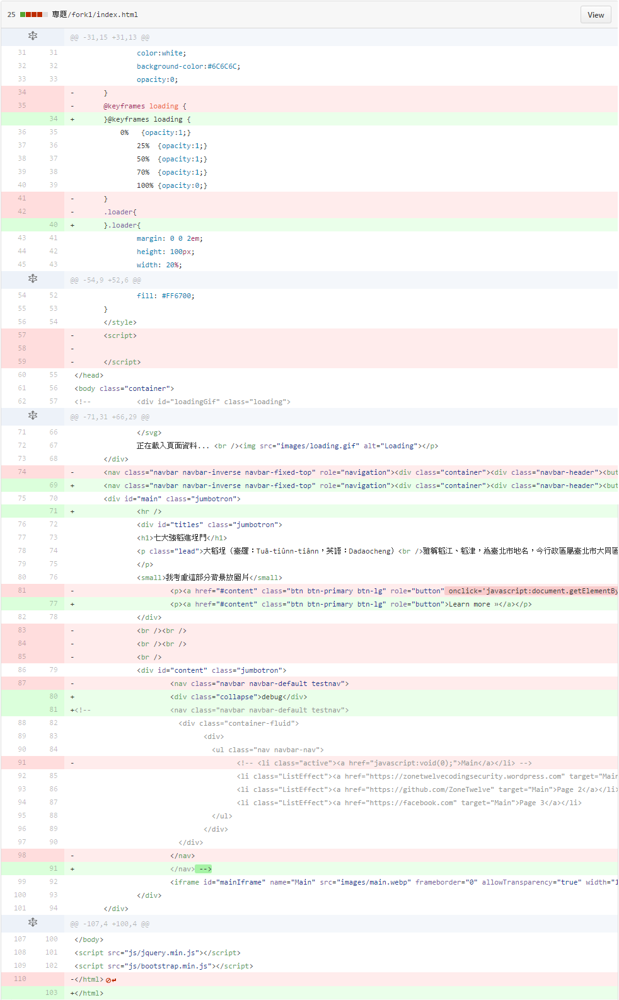

查詢隊伍
瀏覽次數：201
歡迎進入 168 交流園區 專題研究累計 91 小時
| 報名日期： | 2017-01-24 11:31:18 |
|---|---|
| 隊伍編號： | C1735010076 |
| 隊伍名稱： | 168 |
| 縣 市： | 臺北市 |
| 組 別： | 高中組 |
| 參賽類別： | 地方觀光資源類 |
| 中文專題名稱： | 七大強稻進埕門 |
| 英文專題名稱： | Way to Dadaocheng |
| 專題描述： | 自清末至日治時期，大稻埕在經濟、社會及文化活動上都有傲視全島的發展及成長，不僅商業活動頻繁，同時也是人文薈萃之地。因此我們希望藉由網頁的方式將大稻埕的歷史繁榮及現今的風采呈現出來。 |
| 地方描述： | 大稻埕是個古色古香的地方，有許多古老建築，例如走懷舊風的星巴克就是一個非常經典的例子，融合了現代商業跟古式建築，另外，歷史悠久的仁安醫院經過整修後也重現了當年的樣貌，建築內部也保有當時醫院內的設施、器具，在那邊的志工阿姨也細心的做講解讓我們知道這座醫院的歷史，當然，在大稻埕絕對不能錯過熱鬧的迪化街與永樂市場，迪化街在日據時代是南北雜貨、茶行為主，現在則轉變為年貨大街，而永樂市場在1960年代則是紡織工業的大本營，至今還是大眾喜愛的布莊之一，這幾個非常經典的景點都為大稻埕增添了更多昔日的氣息，是民眾們假日出遊的好去處。 |
| 學校名稱： | 市立大安高工 |
指導老師 2
| 姓名 | 林冠宇 |
|---|---|
| 性別 | 男 |
| 姓名 | 洪醒漢 |
| 性別 | 男 |
學生成員 7
| 姓名 | 王品雅 |
|---|---|
| 性別 | 女 |
| 姓名 | 范萬昱 |
| 性別 | 男 |
| 姓名 | 黃子祐 |
| 性別 | 男 |
| 姓名 | HACKED |
| 性別 | 男 |
| 姓名 | 洪嘉駿 |
| 性別 | 男 |
| 姓名 | 唐倢俐 |
| 性別 | 女 |
| 姓名 | 凌于涵 |
| 性別 | 女 |
| 第 9 份報告寫於 2017-02-21 21:44:21 專題研究時數：7 | |
|---|---|
| 標題 | 最後內容確認修正 |
| 內容 | 增加"關於我們" 修改"交通資訊"位置 增加"參考資料" 錯字修正，電腦內容呈現排版修正，照片呈現"載入更多"由下方移置上方 增加相片內容簡介 將恐侵犯智慧財產權之相片動畫刪除 補齊簡報遺漏資料 於"大稻埕景點"處增加"交通資訊" |
| 第 8 份報告寫於 2017-02-21 13:53:56 專題研究時數：6 | |
|---|---|
| 標題 | 20170221 - 網頁完成 |
| 內容 | CrossSiteScripting |
| 第 7 份報告寫於 2017-02-16 13:04:17 專題研究時數：18 | |
|---|---|
| 標題 | 20170216 - 完成 相片Loader & 美景介紹 |
| 內容 |
相片展示器更新 更新內容:
GitHub更新日誌 美景介紹更新 更新內容:
|
| 第 6 份報告寫於 2017-02-13 23:49:45 專題研究時數：1 | |
|---|---|
| 標題 | 20170213 - 新增與修正網頁內容圖片 |
| 內容 |
新增網頁Logo新增相關建築圖片修正首頁text shadow不清楚GitHub |
| 第 5 份報告寫於 2017-02-13 13:12:39 專題研究時數：35 | |
|---|---|
| 標題 | 20170212 - 進行版型大更新 |
| 內容 |
主頁(index)進行大更新測試修改版型設計
測試結果:
PC版  Moblie版  GitHub源碼 |
| 第 4 份報告寫於 2017-02-13 12:53:50 專題研究時數：14 | |
|---|---|
| 標題 | 20161230 - 網頁版面設計更新 |
| 內容 |
增加主要的網頁設計文件(CSS main.css)主頁(index) 增加 110 行
總數:GitHub日誌 |
| 第 3 份報告寫於 2017-02-13 12:46:12 專題研究時數：2 | |
|---|---|
| 標題 | 20161231 - 修改主頁 |
| 內容 |
主頁內容(index)修整最終 增加 9 行 刪除 16 行 (9 additions and 16 deletions.) GitHub日誌  |
| 第 2 份報告寫於 2017-02-13 00:24:19 專題研究時數：3 | |
|---|---|
| 標題 | 20170213 - 網頁內容修改 |
| 內容 |
將次要網頁(PageA)內容修改為小測驗 |
| 第 1 份報告寫於 2017-02-12 17:20:21 專題研究時數：5 | |
|---|---|
| 標題 | 20161217 - 網頁設計更新GitHub |
| 內容 |
2016/12/17 網頁設計更新ZoneTwelve committed on GitHub on 17 Dec 2016 GitHub記錄(開源管理服務)(.注1) 新版網頁展示(20170124更新): 舊版網頁源碼網址 注1. GitHub是一個透過Git進行版本控制的軟體原始碼代管服務 詳細了解: |
| 主旨： Helloworld | |
|---|---|
| 內容 | Helloworld |
| 作者 | C1735010076 |
| 時間 | 2017-02-24 13:02:24 |
| 主旨： 無法留言? | |
|---|---|
| 內容 | |
| 作者 | C1735010076 |
| 時間 | 2017-02-24 13:00:02 |
| 主旨： 留言測試 | |
|---|---|
| 內容 | |
| 作者 | C1735010076 |
| 時間 | 2017-02-24 12:58:31 |